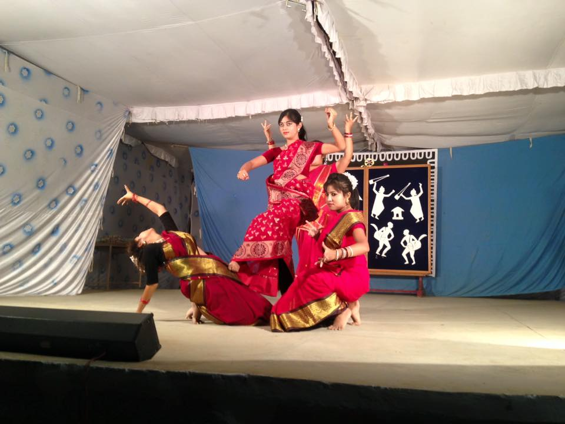

About
Education
Experience
Skills
Projects
Positions of Responsibility
Courses
Achievements
Blogging
Resume
*Desktop compatible view only*
Ananya Banerjee
 ananya.banerjee.rr@gmail.com
ananya.banerjee.rr@gmail.com
 ananyabanerjee
ananyabanerjee
 ananyabanerjee
ananyabanerjee
About
I am currently a Master's student at University of Texas at Dallas,
studying Computer Science with specialization in Intelligent Systems. My broad interests lie at the intersection of Natural Language Processing, Machine Learning and Computer Vision. I am currently working on my Thesis titled "Knowledge Infused Text to Scene Graph Generation". I am always excited to explore new and unique ideas.
I completed my M.Sc(Hons) in Mathematics
at BITS Pilani,
India in 2017. After my M.Sc(Hons) at BITS Pilani, I applied for Graduate School at University of Texas at Dallas and got accepted as a Jonsson Scholar.
Education

University of Texas at Dallas
| MS in Computer Science
Expected July 2020
Jonsson School $1000 Graduate Study Scholarship Recipient
Birla Institute of Technology and Science, Pilani Campus, Pilani
| M.Sc(Hons) Mathematics
May 2017
Experience
Artifical Intelligence Institute, University of South Carolina
- Research Intern in Artificial Intelligence
- Working on Knowledge Infused learning for performing Object Detection
- Project Class Imbalance: This project was done single-handedly by me wherein I did extensive research on the existing techniques of solving class imbalance and devised an improved version of an existing algorithm that is capable of handling all kinds of class imbalances and gives higher efficiency than all existing algorithms. Further Details cannot be revealed due to NDA signed.
- Project Hyperparameter Optimization: This project aimed at finding ways to find optimal hyper-parameters for any Machine Learning and Deep Learning algorithm. I worked on deciding upon which optimization is most viable given a problem and a data-set. I also worked on trying to understand Bayesian Optimization using several libraries of python such as Hyperopt and sklearn.
- Project Modification of Deep Learning and Machine Learning Algorithms.: This project aimed at finding how several Machine Learning and Deep Learning Algorithms emerged, the maths behind them, how could they be improved and how one can regularize models depending on the choice of ML algorithm. I have studied algorithms like Logistic regression, K-Means, K-Median, hierarchical clustering, Deep Belief Networks, Restricted Boltzman machines, Perceptron and Multi Layered Perceptron.
- Design and Development of a fully functional Cloud-Enabled, Location-Aware and Street Quality-Capturing Android TM Application that conducts survey as per requirements provided by the organization
Aug 2019 - Dec 2019
Busigence Technologies
| Data Science Associate
July 2016 - Dec 2016
Janaagraha Centre for Citizenship and Democracy
May 2015 - July 2015
Skills
Below are some of the skills that I have used in my projects before. Clicking on each will lead to the project in which I have used the skill.


Projects
This list of projects cover most of my projects but is not limited to the same.
@University of Texas at Dallas
Knowledge Infused Text to Scene Graph Generation*
[Master's Thesis]
To develop a novel technique to generate the scene graph given the description of an image by understanding it.
Information Extraction
[Natural Language Processing]
This project focused on extracting information from the given set of text documents using a combination of Semi-Supervised and Rule Based Approaches.
Question Answering System using First Order Logic
[Artificial Intelligence]
This project focused on creating a Question Answering System in the Domain ”Groceries and Meat” using First Order Logic.
Part of Speech Tagging with Naive Bayes
[Natural Language Processing]
This project focused on performing POS Tagging on any given sentence using Naive Bayes.
Part of Speech Tagging with Viterbi Algorithm
[Natural Language Processing]
This project focused on performing POS Tagging on any given sentence using the observation likelihoods and Viterbi Algorithm.
Application of Add One Smoothing
[Natural Language Processing]
This project focused on creating bigrams with Add One Smoothing.
Application of Good Turing Discounting
[Natural Language Processing]
This project focused on creating bigrams with Good Turing Discounting.
A* Search for 8-puzzle problem
[Artificial Intelligence]
This project focused on solving the 8 puzzle problem using A* Search.
Iterative Deepening Search for 8-puzzle problem
[Artificial Intelligence]
This project focused on solving the 8 puzzle problem using Iterative Deepening Search.
Breadth First Search for 8-puzzle problem
[Artificial Intelligence]
This project focused on solving the 8 puzzle problem using Breadth First Search.
Object Detection using Contextual Knowledge
[Computer Vision]
This project consists of using Knowledge Graph and General Adversarial Learning to detect objects. The code will soon be available on github.
Fake Opinion Detection
[Natural Language Processing]
Developed a supervised learning model using Python that was able to detect fake reviews by learning from YelpNYC dataset.
Creation of 2D Tetris Game
[Computer Graphics]
Created a 2D Tetris Game using Java.
Big Data-related projects
Implemented various algorithms and performed analysis on big data related to airports, movies, twitter social circles, etc.
- Pagerank for airports
- Search Engine for movies
- Topic modeling for classic books
- Twitter airline sentiment analysis
- Twitter social circles analysis using GraphX
Toxicity Detection
[Natural Language Processing]
Implemented a model that is capable of detecting toxicity in given large number of Wikipedia comments which have been labeled by human raters for toxic behaviour.
@BITS Pilani
Study Project on Number Theory for Cryptography
[Cryptography]
This project aimed at studying factorization, primality and RSA Algorithm along with Discrete Logarithms and Hash Functions
Special Project on Analytical Number Thoery
[Theoretical Mathematics]
This project focused on understanding Riemann Zeta functions, Chebyshev Function, Distribution of primes , Euler Products and Proof for Prime Number Theorem.
Positions of Responsibility
Below are some of the major PORs that I managed during my Bachelors.
Moruchayya, Bengali Cultural Association, BITS Pilani
Cultural Secretary
Aug 2014 – Aug 2016
Responsible for Choreographing dance performances for the major event of BITS Pilani, Pilani Campus such as Founders Day, Durga Pooja and other cultural programs.
Executive Team Memeber, Embryo Club, BITS Pilani, Pilani Campus
Nov 2013 – Dec 2014
Responsible for inviting professionals from across all major domains for giving a talk via Telepresence at BITS Pilani, Pilani Campus.
Master of Ceremony and Anchor for the event organized during visit of Nobel Laureate Sh. Kailash Satyarthi BITS Pilani, Pilani Campus
Jan 2015
Conducted the event successfully and the entire video of the event can be found on youtube at https://www.youtube.com/watch?v=jyRiXMg0d6Qt=47s
Courses
@University of Texas at Dallas
- Machine Learning
- Natural Language Processing
- Artificial Intelligence
- Design & Analysis of Computer Algorithms
- Big Data Management And Analytics
- Data Structures and Algorithms
- Operating System and Concepts
- Database Design
- Computer Graphics
@BITS Pilani
- Optimization
- Object Oriented Programming
- Networks and Graphs
- Cryptography
- Measures and Integration
- Introduction to Topography
- Techniques in Social Research
- Print and Audio Visual Media
- Comparative Indian Literature
- Psychology
- Applied Philosophy
Achievements
- One of the few selected out of all the applicants from 88 different countries for the Deep Learning Reinforcement Learning (DLRL) Summer School 2020 which is jointly organized by CIFAR, MILA, Alberta Machine Intelligence Institute(Amii) and The Vector Institute of AI.
- Selected to participate in the 2020 CRA-WP Grad Cohort for Women on April 16-18, 2020 at the Hilton New Orleans Riverside in New Orleans, LA.
- My article on "Can Human Intuition be infused with that of a machine?" and "Model fitting: Overfitting v/s Underfitting" were selected to be featured articles on Towards Data Science.
- Recipient of Jonsson School Graduate Study Scholarship at University of Texas at Dallas (2018).
- Received Certificate of Merit for all subjects in high school (both 10th and 12th).
- Stood among the top 1% students of all students in the CBSE examination in 2010 and 2012.
A bit more about me...
In my spare time, I absolutely love dancing and playing Piano. I am also fond of designing and making rangolis.
Resume